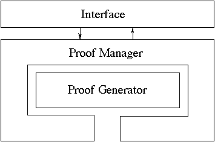

Machine: Multi-PSI Environment: PIMOS, SIMPOS Language: KL1, ESP Source Code: 1 MB Documents: Manual (English/Japanese)

The basic proof procedure starts with initial goal F. Five inference rules, similar to the ordinary Prolog execution and the "Negation as Failure" rule, are repeatedly applied to each goal to generate subgoals. When all generated goals become true, it turns out that F is valid in the minimum Herbrand model of P. In the basic proof procedure, the application of the inference rules is nondeterministic, so that the search space for proof is very large. In our actual proof procedure, how each predicate appearing in F recurses in P is analyzed, and an outline of possible proof, called inductive proof plan, is extracted. The main part of proof is generated according to this inductive proof plan, so that the search space for proof is much reduced. When more than two inductive proof plans are extracted from F, proofs according to them are searched in parallel.